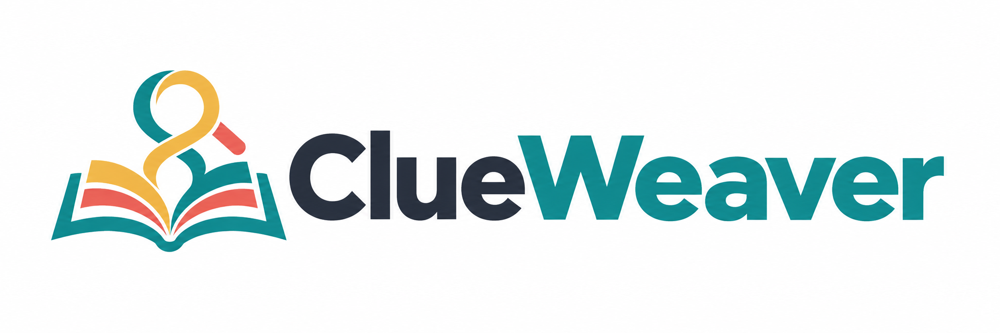

Retain answer-critical clues
Retrieval guides the construction of narrative segments. The Finder makes a YES/NO evidence decision, with a short rationale and supporting paragraph IDs.
Reward focusEvidence retention · citation faithfulness
ICONIP 2026 Accepted paper

Reward-Guided Dual-Agent Evidence Reasoning
for Compact LLMs on Literary Long Narratives
A compact Finder selects the evidence.
An Interpreter connects it into a grounded answer.
INSIDE CLUEWEAVER
“Leon could unlock the attic after Mara left.”
TRUE / FALSEThe narrativeParagraph-indexed source
FinderEvidence selection
InterpreterGrounded reasoning
The answer depends on the lock, the key changing hands, and who still has it later.
Only the brass key could unlock the attic.
Rain drummed against the windows all evening.
Mara was leaving for the harbor that evening.
Before she left, Mara handed the brass key to Leon.
He put it inside his coat pocket.
Hours after Mara left, Leon still carried the brass key.
The source narrative and claim enter the pipeline together. Ground-truth labels are not part of the input.
Fictional, scripted illustration of inference, not a live model run or benchmark result. Candidate windows, relevance decisions and the 900-character evidence budget are illustrative. Both agents are trained separately with GRPO; self-calibration reuses the Interpreter and the same evidence packet.
THE IDEA
Humanities and social science research requires close reading of long narrative materials such as novels, scripts, archives, and case reports, yet many users have limited access to costly proprietary long-context models. Compact, locally deployable language models are a practical alternative, but directly feeding them an entire long context remains costly, hard to inspect, and prone to missing sparse evidence.
We present ClueWeaver, an evidence-aware dual-agent framework for long-narrative question answering with compact local models. A Finder identifies passages containing answer-critical clues through retrieval-guided segmentation, while an Interpreter derives the answer from the selected evidence, produces rationales with paragraph-ID citations, and applies an internal self-calibration pass for high-risk questions.
Both agents are optimized with reward-guided reinforcement learning: Finder rewards emphasize evidence retention and faithful paragraph-ID references, and Interpreter rewards emphasize correctness, grounding, and concise explanations. This decomposition makes evidence selection and reasoning more inspectable than end-to-end prompting. Experiments across multiple long-context narrative question answering and claim verification settings show that ClueWeaver substantially improves local end-to-end language models while providing evidence coverage and paragraph-referenced reasoning traces.
METHOD
Retrieval guides the construction of narrative segments. The Finder makes a YES/NO evidence decision, with a short rationale and supporting paragraph IDs.
Reward focusEvidence retention · citation faithfulness
Selected passages are packed in narrative order. The Interpreter answers with paragraph-grounded reasoning and can re-check high-risk answers against the same evidence.
Reward focusAnswer correctness · grounding · concision
Both agents are trained separately with GRPO. The source narrative is given; retrieval operates within it.
EXPERIMENTS
Four long-context narrative benchmarks. Final answer accuracy.
Overall accuracy
vs. Qwen3-4B direct reading
vs. strongest local baseline overall
| Method | DetectiveQA | ∞Bench | LongBench v2 | NoCha | Overall |
|---|---|---|---|---|---|
| End-to-end reader · Local | |||||
| Qwen3-4B-Instruct | 36.5 | 50.7 | 38.5 | 49.5 | 44.5 |
| Qwen3-8B | 45.2 | 56.5 | 26.9 | 55.0 | 49.7 |
| Ministral-3-14B | 45.2 | 60.9 | 26.9 | 51.4 | 49.4 |
| GPT-OSS-20B | 30.8 | 33.3 | 34.6 | 50.5 | 38.7 |
| Qwen3-30B-A3B | 44.2 | 58.0 | 38.5 | 54.1 | 50.3 |
| Gemma-4-31B-it | 35.6 | 58.0 | 46.2 | 59.5 | 50.0 |
| End-to-end reader · API | |||||
| Claude Haiku 4.5 | 62.5 | 73.9 | 38.5 | 64.9 | 63.9 |
| GPT-5 nano | 62.5 | 76.8 | 26.9 | 60.4 | 61.9 |
| Agentic pipelines · Local | |||||
| ReAct | 50.0 | 50.7 | 38.5 | 58.6 | 52.3 |
| IRCoT | 53.8 | 44.9 | 34.6 | 60.4 | 52.6 |
| Self-Ask | 36.5 | 49.3 | 19.2 | 59.5 | 46.1 |
| Chain-of-Agents | 27.9 | 46.4 | 38.5 | 55.9 | 42.9 |
| RAG-DDR | 47.1 | 53.6 | 30.8 | 59.5 | 51.6 |
| ClueWeaver Ours | 55.8 | 63.8 | 50.0 | 61.3 | 59.0 |
310 questions: DetectiveQA (104), ∞Bench (69), LongBench v2 (26), NoCha (111). Overall accuracy is weighted by question count. Local end-to-end readers use 32K context; API readers use 128K. API readers remain stronger overall. Baseline implementations are detailed in Appendix C.
A CLOSER LOOK
OPEN RELEASE
Core inference code, reward functions, and both agent checkpoints.
REFERENCE
@misc{zhu2026clueweaver,
title={ClueWeaver: Reward-Guided Dual-Agent Evidence Reasoning for Compact LLMs on Literary Long Narratives},
author={Jihao Zhu and Zhiwei Yang and Wenxiao Zhang and Junqian Zhao and Qi You and Fangqi Wang and Zheyuan Deng and Hanzhe Yang and Yu Liu and Jin B. Hong},
year={2026},
eprint={2608.25531},
archivePrefix={arXiv},
primaryClass={cs.CL},
url={https://arxiv.org/abs/2608.25531}
}This research is supported by the National Key R&D Program of China (No. 2023YFC3303800). We thank WisPaper / QiewenPaper for Academic Agent support and GPU computational resources throughout the study.